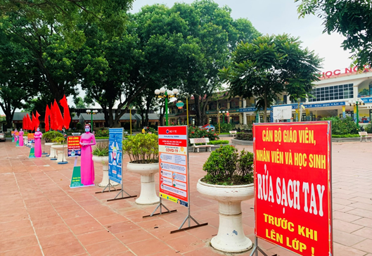
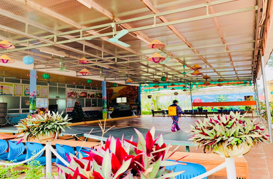
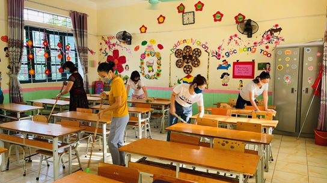
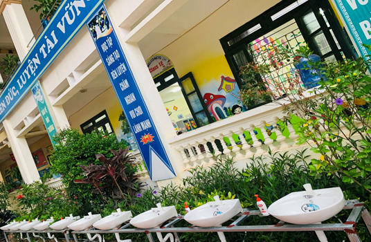
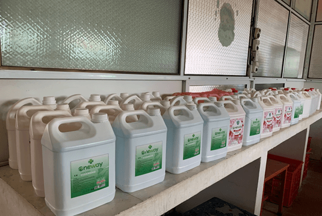
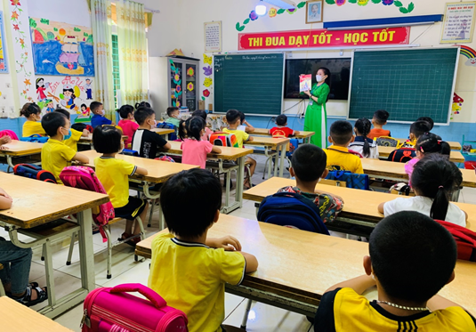
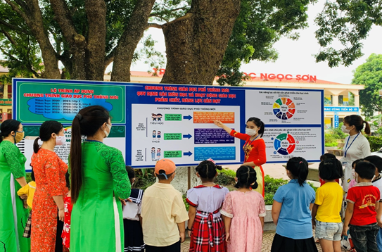
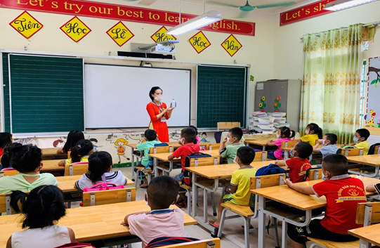
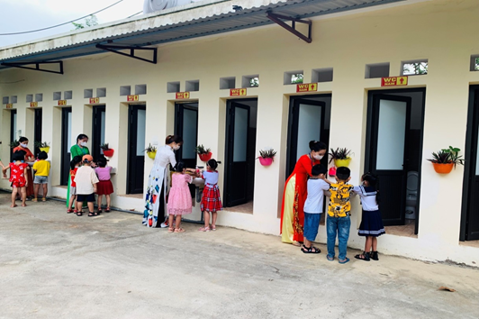

Công tác chuẩn bị năm học mới ở trường Tiểu học Ngọc Sơn huyện Hiệp Hòa
Thực hiện Quyết định số 1673/QĐ-UBND tỉnh Bắc Giang ngày 06/8/2021 về việc Ban hành kế hoạch thời gian năm học 2021-2022 đối với giáo dục Mầm non, giáo dục phổ thông và giáo dục thường xuyên tỉnh Bắc Giang. Theo đó, ngày tựu trường của các cấp học, bắt đầu từ 01/9/2021 (thứ 4). Riêng đối với lớp 1, tựu trường ngày 23/8/2021 (thứ 2).

Để bảo đảm an toàn cho học sinh, một số địa phương đã xuất hiện ca bệnh hoặc có nhiều người nghi nhiễm virus SARS COVI - 2 đã lùi thời gian tựu trường của học lớp 1 đến ngày 01/9/2021 cùng với học sinh các cấp học Tiểu học, THCS và THPT.

Khử khuẩn trường học
Huyện Hiệp Hòa và một số huyện khác như Việt Yên, Tân Yên, Yên Dũng và một số xã, thị trấn của huyện Lạng Giang, Yên Thế vẫn đón học sinh lớp 1 đến trường vào ngày 23/8/2021.

Vệ sinh lớp học ở trường Tiểu học Ngọc Sơn
Để chuẩn bị cho năm học mới và đón học sinh lớp 1, nhà trường đã triển khai, chỉ đạo cán bộ, giáo viên, nhân viên và học sinh thực hiện nghiêm túc kế hoạch số 57/KH-SGD&ĐT ngày 31/7/2021 của Sở giáo dục và Đào tạo, kế hoạch số 08/KH-PGD&ĐT ngày 04/8/2021 của phòng Giáo dục và Đào tạo về việc thực hiện các biện pháp phòng chống dịch Covid-19 trong tình hình mới theo tinh thần Chỉ thị số 11/CT-UBND ngày 28/7/2021 của Chủ tịch ủy ban nhân dân tỉnh. Trường Tiểu học Ngọc Sơn đã xây dựng kế hoạch số 06/KH-THNS ngày 05/8/2021 về việc thực hiện các biện pháp phòng chống dịch Covid - 19 trong tình hình mới, theo các tình huống với phương án tổ chức chi tiết, cụ thể, đảm bảo khả thi với tình hình thực tế của nhà trường.

Bổ sung bồn rửa tay
Mặc dù học sinh chưa đến trường nhưng giáo viên chủ nhiệm đã thông qua các phương tiện như điện thoại, Zalo, Facebook… tuyên truyền, hướng dẫn phụ huynh học sinh các nội quy, nề nếp, chuẩn bị sách vở, đồ dùng học tập…đặc biệt, những công việc cần làm để phòng chống dịch Covid - 19 khi học sinh trở lại trường.

Trang bị nước sát khuẩn
Đồng thời nhà trường triển khai thống kê, rà soát trang thiết bị dạy và học trực tuyến của nhà trường, giáo viên và học sinh để sẵn sàng tổ chức dạy học trực tuyến trong điều kiện cần thiết.
Trước khi đón học sinh vào lớp 1 trở lại trường vào ngày 23/8/2021, nhà trường đã chuẩn bị chu đáo các phương án phòng chống dịch Covid-19. Các công việc như dọn dẹp vệ sinh, khử khuẩn và trang bị các vật dụng như khẩu trang, nước rửa tay, nước sát khuẩn, máy đo thân nhiệt… sẵn sàng đón học sinh tựu trường.
Công tác đón học sinh lớp 1, cũng được nhà trường thực hiện rất chu đáo. Với 252 học sinh lớp 1, tựu trường cùng với 5755 em học sinh lớp 1 trong toàn huyện. Các em đã có mặt đầy đủ ngay từ buổi tựu trường đầu tiên với một tâm thế vui vẻ, phấn khởi và đầy hào hứng.

Giới thiểu Sách lớp 1 - Ảnh minh họa
Để bảo đảm công tác phòng chống dịch, với phương châm bảo đảm môi trường an toàn cho học sinh khi đến trường. Các thông tin, yêu cầu về việc thực hiện công tác chống dịch, đã được các thầy giáo chia sẻ thông qua Zalo, Facebook, điện thoại… Do đó, ngay từ buổi đầu tiên tất cả các bậc phụ huynh học sinh đã phối hợp thực hiện rất nghiêm túc quy định của nhà trường. 100% các em đến trường đều thực hiện đeo khẩu trang đầy đủ, hầu hết các em được đo thân nhiệt trước khi đến trường. Đồng thời, nhà trường bố trí các thầy cô giáo đón học sinh và phân luồng ngay từ cổng trường, để thực hiện tốt việc giãn cách. Các bậc phụ huynh rất yên tâm và sẵn sàng đồng hành cùng nhà trường, để thực hiện nhiệm vụ năm học được tốt nhất.

Giới thiệu chương trình giáo dục phổ thông mới 2018 - Ảnh minh họa (tiểu học Ngọc Sơn)
Các em học sinh mặc dù còn rất nhỏ, vừa rời mái trường Mầm non, nhưng hình như các em cũng ý thức được vấn đề này, rời vòng tay ông, bà, bố, mẹ ngay từ ngoài cổng trường và rất tự tin nắm tay cô bước vào lớp học.
Ngay từ những buổi học đầu tiên, với sự ân cần của thầy cô, các em đã nhanh chóng hòa nhập với môi trường mới. Các em đã được làm quen với thầy cô, bạn bè, cán bộ, nhân viên trong nhà trường, làm quen với nề nếp học tập, cách thức tham gia hoạt động trong lớp, trường học, đồ dùng, sách vở học tập, làm quen với các ký hiệu, quy ước trong học tập và hoạt động giáo dục…Các em sẽ được trang bị đầy đủ các điều kiện, để sẵn sàng bước vào năm học mới.

Giáo viên tuyên truyền các biện pháp phòng chống dịch tại buổi học đầu tiên

Với phương châm, việc tổ chức các hoạt động giáo dục phải đảm bảo tuyệt đối an toàn cho cán bộ giáo viên, nhân viên và học sinh trong bối cảnh dịch Covid -19 còn diễn biến phức tạp. Nhằm tiếp tục thực hiện tốt “nhiệm vụ kép”, vừa tuân thủ, thực hiện có hiệu quả sự chỉ đạo của Trung ương, của Tỉnh, của Huyện về phòng chống dịch covid-19, vừa duy trì các hoạt động giáo dục đảm bảo hoàn thành các mục tiêu nhiệm vụ năm 2021 và năm học 2021-2022, nhà trường xác định nhiệm vụ phòng, chống dịch Covid-19 là nhiệm vụ trọng tâm, cấp bách, thường xuyên, gắn chặt thực hiện nhiệm vụ chống dịch với phát triển hoạt động giáo dục của nhà trường, để hoàn thành tốt mọi nhiệm vụ được giao. Với sự chung sức, đồng lòng của tập thể cán bộ, giáo viên, nhân viên, phụ huynh và học sinh,Trường tiểu học Ngọc Sơn sẽ quyết tâm vượt qua khó khăn, thực hiện các giải pháp với phương châm “khó khăn gấp đôi thì nó lực gấp ba”, để thực hiện thắng lợi nhiệm vụ năm học 2021-2022.
Phạm Thị Hoàn - Hiệu trưởng trường Tiểu học Ngọc Sơn